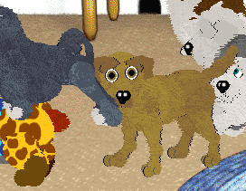
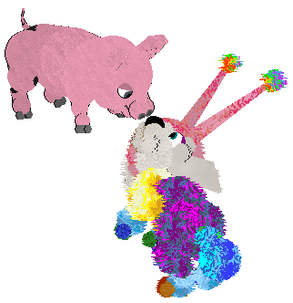
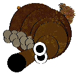
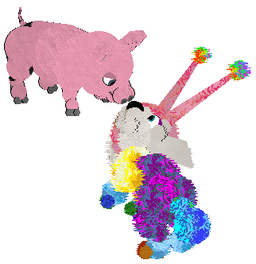
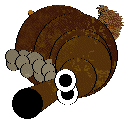

Crew

Hi! I’m Moon (she/her). Say hi to the crew! I love to try and catch frisbees and hop on my hip.


Ruby is very territorial, and loves to play tug-of-war. She loves to play games, but only ones she wins every time.
Bloo loves to be petted, and hates it when others get petted! He loves to play with balls, and the blue plane.
Wheatley is shy, but he loves to play with the auto-rolling green ball.
Narrator is not very patient or kind, but is very loving to certain people, and he loves to play with the mice of the house.


Tigger is a ball of energy and loves to bounce everywhere.
 

The newest member of the family is a rescue mutt named Mittens.